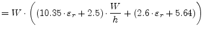
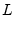
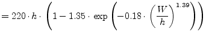
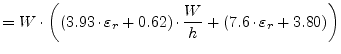
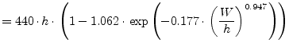
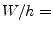
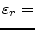
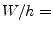
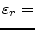

The equivalent circuit of a microstrip corner is shown in fig. 11.4. The values of the components are as follows [30].
| [pF] |  | (11.84) |
|  [nH] |  | (11.85) |
The values for a 50% mitered bend are [30].
| [pF] |  | (11.86) |
| [nH] |  | (11.87) |
With  being width of the microstrip line and
being width of the microstrip line and  height of the
substrate. These formulas are valid for  0.2 to 6.0 and for
 2.36 to 10.4 and up to 14 GHz. The precision is
approximately 0.3%.
height of the
substrate. These formulas are valid for  0.2 to 6.0 and for
 2.36 to 10.4 and up to 14 GHz. The precision is
approximately 0.3%.
The Z-parameters for the given equivalent small signal circuit can be written as stated in eq. (11.88) and are easy to convert to scattering parameters.